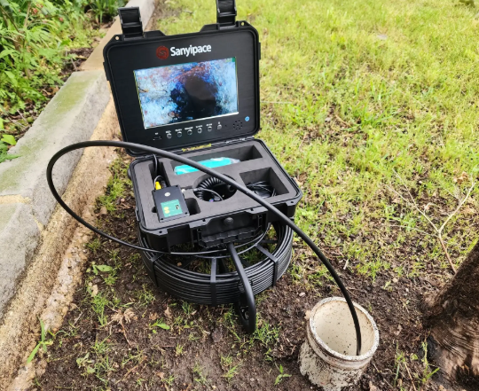
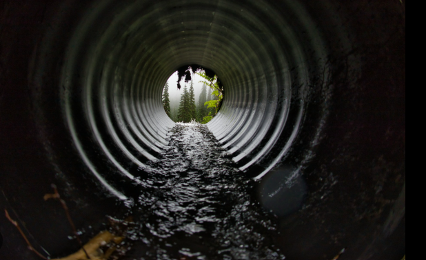

Underground Inspection · Hernando County, FL
High-definition camera inspection of your main sewer line — from the home to the municipal connection. Find what standard inspections can't see, before you close.
What Is It
Using high-definition waterproof cameras, we navigate your home's main lateral sewer line from the house cleanout to the municipal connection or septic tank. The entire inspection is recorded and provided to you as part of your report.
A sewer scope is one of the most valuable add-on services available during a real estate transaction. Underground sewer repairs in Hernando County can run into the thousands — or tens of thousands — of dollars. A sewer scope costing a fraction of that can reveal exactly what you're buying before you close. We serve Spring Hill, Brooksville, Weeki Wachee, Hernando Beach, and all of Hernando County.
We locate the main clean-out and insert our specialized waterproof camera to begin the inspection of the underground piping system. We document the pipe material, condition, and any areas of concern as we navigate the full length of the lateral.

Clients receive a high-definition video recording showing the interior condition of the pipes — every joint, connection, and area of concern is captured in real time. This documentation can be shared with plumbers for repair estimates or with sellers to negotiate repairs before closing.

What We Find
Identifying these underground issues before closing can save thousands of dollars in excavation, pipe replacement, and landscape restoration costs.
Tree roots are naturally drawn to moisture in sewer lines. Even small cracks allow roots to enter, where they grow rapidly — causing major blockages and eventually destroying the pipe entirely.
A belly occurs when a section of pipe sags due to soil erosion or improper installation. Water and waste pool in the low spot, leading to frequent backups and accelerated debris buildup.
Shifting soil causes pipe joints to pull apart or crack over time. This allows sewage to leak into surrounding soil and creates a catch-point for solids — a serious and expensive failure.
Common Questions
Yes. Construction debris — rocks, wood scraps — can fall into lines during builds, and heavy machinery can crush pipes before the home is even finished. New construction is not immune.
No. Most inspections only verify that drains are currently flowing. A scope is a separate service that inspects the actual buried pipe condition with a HD camera — two very different things.
We provide a video recording and written report. You can share this with plumbers for repair estimates, or use it to negotiate repairs or credits with the seller before closing.
Slow drains throughout the home, gurgling sounds after flushing, unusually lush patches of grass in the yard, or sewage odors are all indicators worth investigating with a scope.
Serving Spring Hill, Brooksville, Weeki Wachee, Hernando Beach, and all of Hernando County. Schedule a sewer scope before you close — not after.